PixelDotNet
An editor that gets out of the way.
A desktop image editor for the jobs people actually do: retouching a photo, cutting out a subject, building a poster, or painting something from scratch.
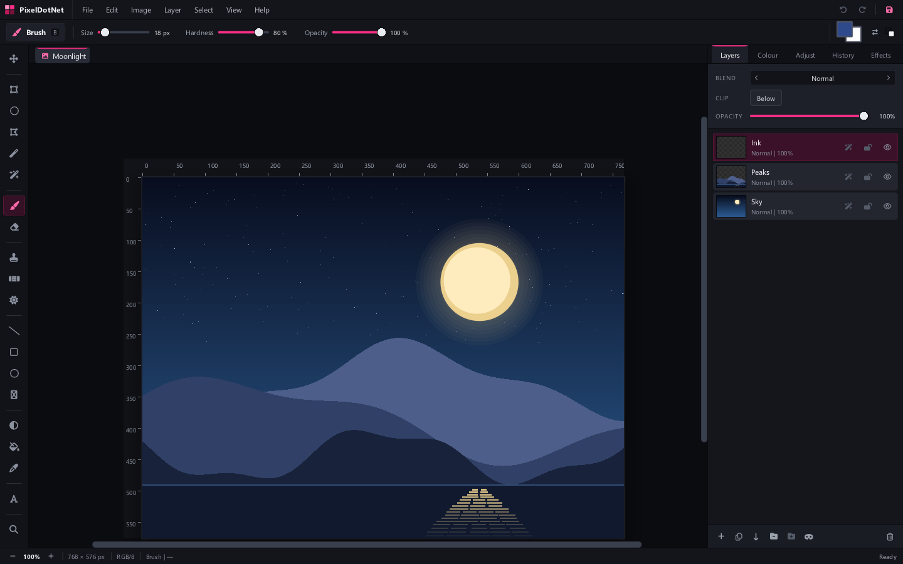
01 / Inside PixelDotNet
What you
get.
Every feature ships in the free build. No pro tier, no unlock key, no “contact sales” for the thing you actually need.
Paint and draw
A round brush with size, hardness and opacity, plus eraser, lines, rectangles, ellipses, gradients, paths and live text.
Retouch the mess
Clone Stamp, Healing Brush, Dodge and Burn, Content-Aware Fill, perspective and mesh warp: the everyday repair kit.
Cut it out clean
Quick Selection, Magic Wand and layer masks. Lift a subject off its background and keep the edges honest.
Layers that behave
Masks, clipping, groups, blend modes and smart objects. Non-destructive shadows, strokes and glows.
Type with teeth
Editable text layers with outlines, shadows and glows, plus text on a path when the layout asks for it.
Real files, no lock-in
PNG, JPEG, BMP, TGA, SVG and layered .pxd projects. Batch-resize and convert a folder when the brief changes.
02 / A look inside
The workspace.
Fast, quiet and built around the work. Dark interface, honest controls, and a canvas that gets out of the way.
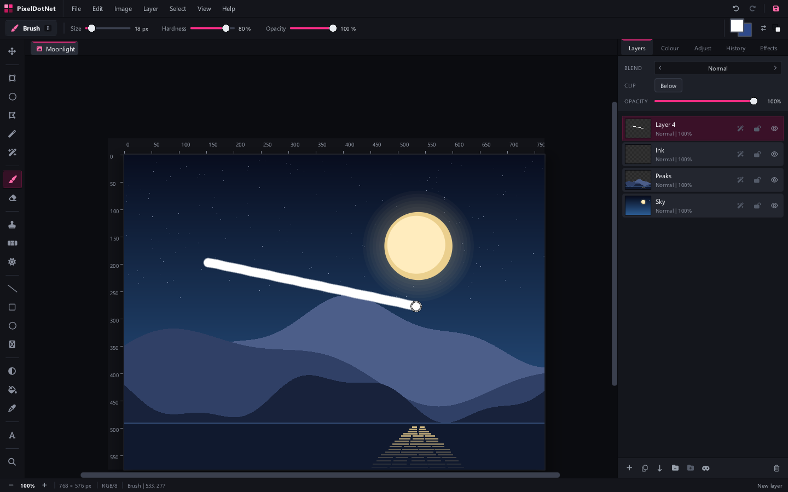
Brushes, shapes and gradients on their own layers, with live options for every tool.

Quick Selection grows around the subject while the original pixels stay underneath.

Live outlines, shadows and glows, still editable when you reopen the layer.
03 / Painting and drawing
Paint, shape,
and path.
A brush that behaves, shape layers you can reopen, and paths whose nodes stay editable. The drawing tools are built to be adjusted later, not baked in.
Brush with options
A round brush with size, hardness and opacity, plus eraser, line, rectangle, ellipse, gradient, bucket and eyedropper in the same rail.
Shape layers
Turn on Shape layer for a rectangle, ellipse or line, then reopen Edit Shape to change its size, stroke, fill and colour.
Paths and nodes
Draw with the Pen, then drag anchors and handles, click a segment to insert a node, and add or delete points precisely.
Retouch kit
Clone Stamp, Healing Brush, Dodge and Burn, Content-Aware Fill, perspective and mesh warp for the everyday repairs.
The Brush is active, the stroke lands on its own layer, and size, hardness and opacity are one drag away.
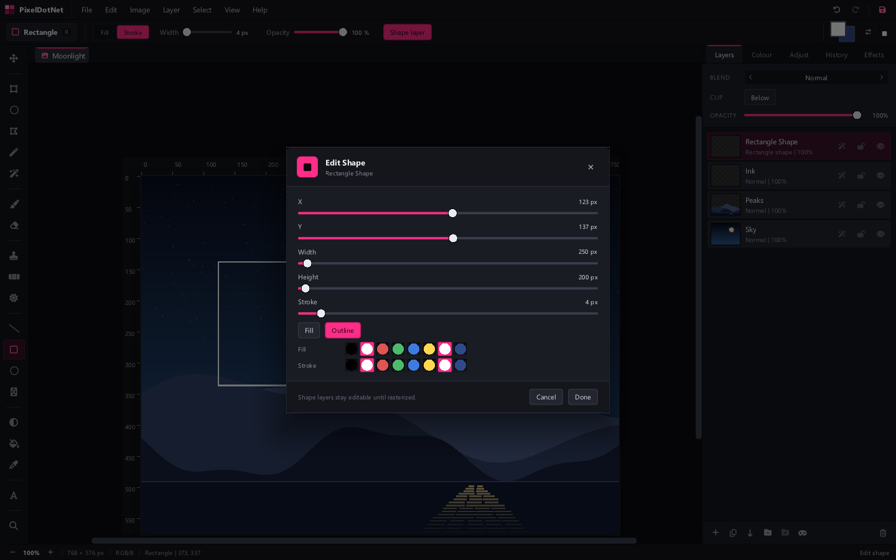
Edit Shape. A shape layer keeps its position, size, outline and fill editable long after it was drawn.
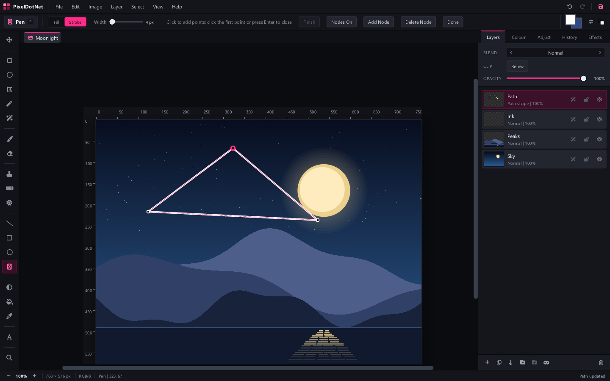
Edit nodes. Drag an anchor to move the path or a handle to change the curve, with Add Node and Delete Node for precision.
04 / Selecting and masking
Cut out.
Keep the pixels.
Selections protect part of the picture while you work. Masks make that protection permanent, paintable and completely reversible.
Quick Selection
Paint over a subject and the selection grows through neighbouring similar pixels. Hold Alt or press Subtract to take areas back.
Five selection tools
Marquee, ellipse, lasso, Magic Wand and Quick Selection, with Shift, Ctrl and Alt to add, subtract or intersect areas.
Layer masks
White reveals, black hides and grey fades. Paint the mask at any time; the layer pixels are never destroyed.
Clip and align
Clip a layer to the artwork below, or use rulers, guides and snapping to line everything up.
Quick Selection grows through connected, similar pixels. Alt or Subtract takes back the background it caught.
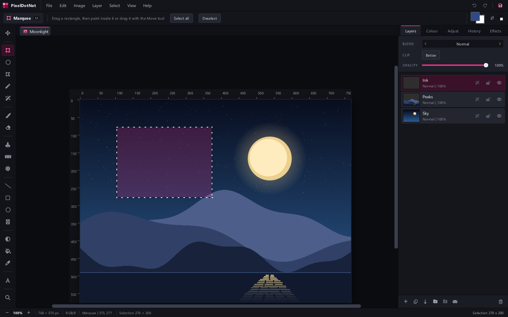
A marquee selection. Everything outside the dashed outline is protected from the next edit.
05 / Layers, styles and smart objects
A stack you
can undo.
Every element gets its own layer, and every layer keeps its options. Groups, blend modes, live styles and smart objects are all part of the file.
Groups and blending
Fold related layers into groups, fade a whole group at once, and mix with Multiply, Screen, Overlay and the rest.
Layer styles
Drop shadow, stroke and outer glow redraw automatically whenever the layer or its mask changes.
Smart objects
Scale, rotate and flip from a pristine copy of the original pixels, so repeated transforms stay sharp.
Locks and visibility
Lock a finished layer, hide it with the eye, clip it to the layer below, or mask it without touching the pixels.
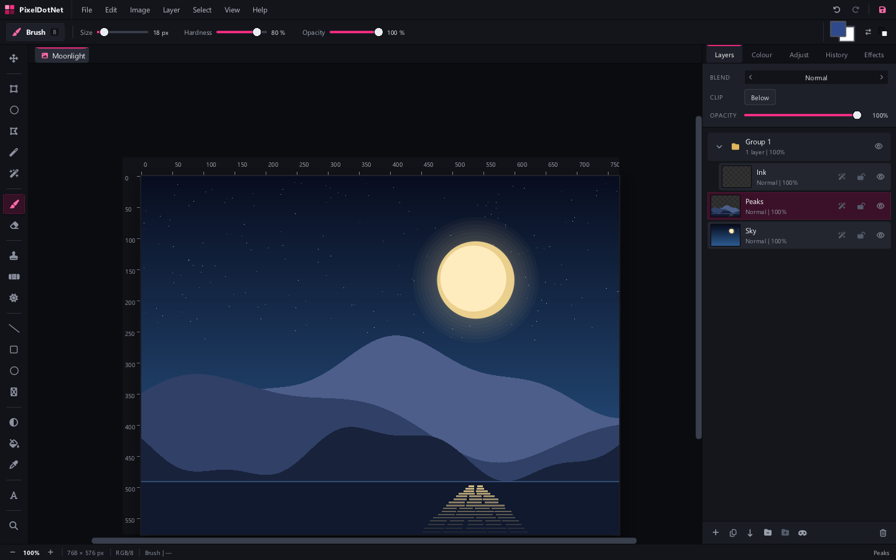
The Layers panel. Groups, blend mode, clip and opacity all apply to the active row.
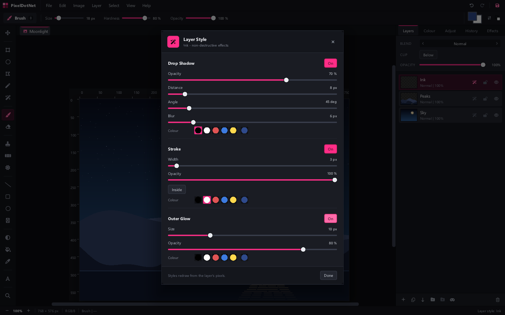
Layer Style. Non-destructive shadows, strokes and glows that follow the artwork.
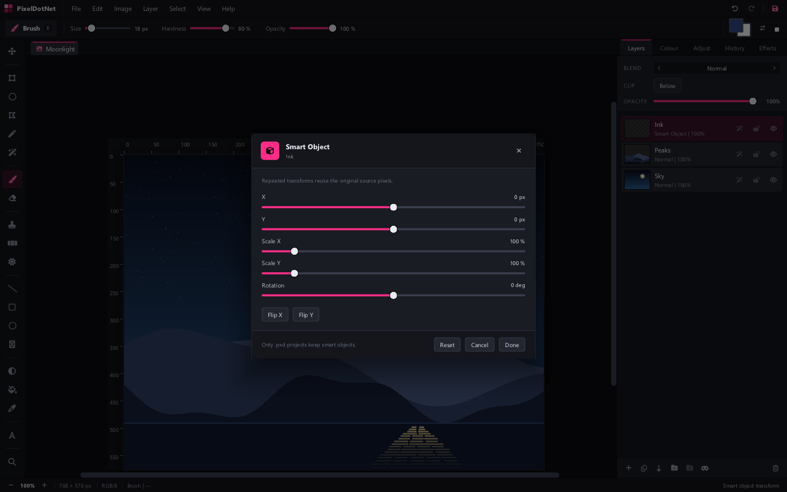
Smart Object. Repeated transforms recalculate from the source pixels instead of resampling.
06 / Type and paths
Words that
stay words.
Text layers remain editable, effects stay live, and type can follow any path you draw. Change the words or the curve whenever you like.
Editable text
Place a text layer, then reopen Edit Text to change the content, font, size, rotation, spacing, weight and fill.
Live effects
Outlines, shadows and glows with presets and fine sliders. They stay attached to the text, not baked into it.
Text on a path
Attach text to a path, slide it with Path offset and adjust spacing. Edit the nodes later and the letters follow.
Fonts on demand
Work with installed families, or paste a font URL into the picker. It is the only optional online action in the app.
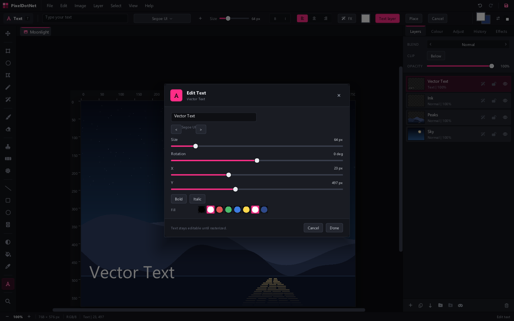
Edit Text. The layer stays editable until you choose to rasterize it.
Text effects. Presets set the look; the sliders refine the outline, shadow and glow.
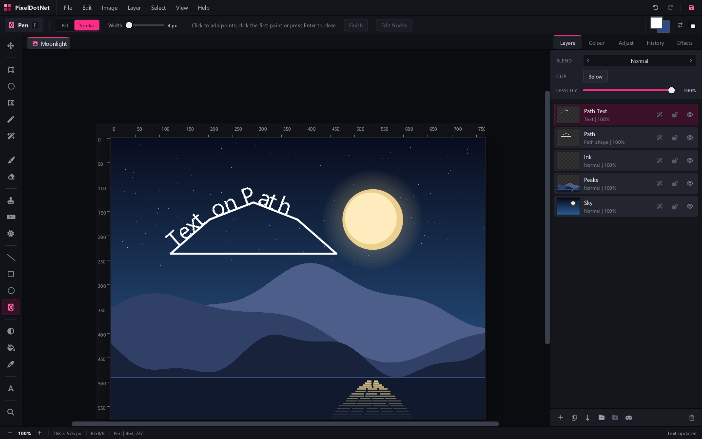
Text on a path. The letters rotate with the curve and update when the path changes.
07 / Colour, effects and transforms
Grade it.
Bend it.
Fix exposure and colour, apply a filter, then pull the picture into shape. Every control previews live and respects the current selection.
Adjust tab
Brightness, contrast, hue, saturation and lightness, plus Levels and Curves, all previewed from the original pixels.
Adjustment layers
Add a Levels or Curves layer to change everything below it without altering a single pixel.
Effects
Gaussian and motion blur, fragment, pixelate, sharpen, emboss, edge detect, noise, posterize and vignette.
Colour Tools
Colour balance, threshold, gradient map, replace colour, red-eye, channel mixer, selective colour and split channels.
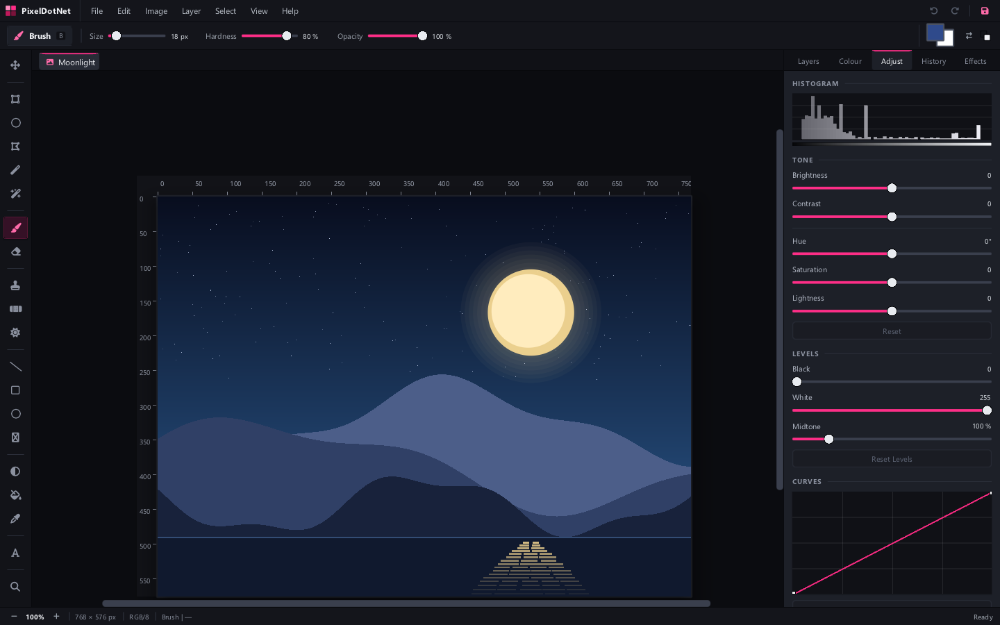
The Adjust tab. Live sliders, Levels and Curves, all limited to the selection when one exists.
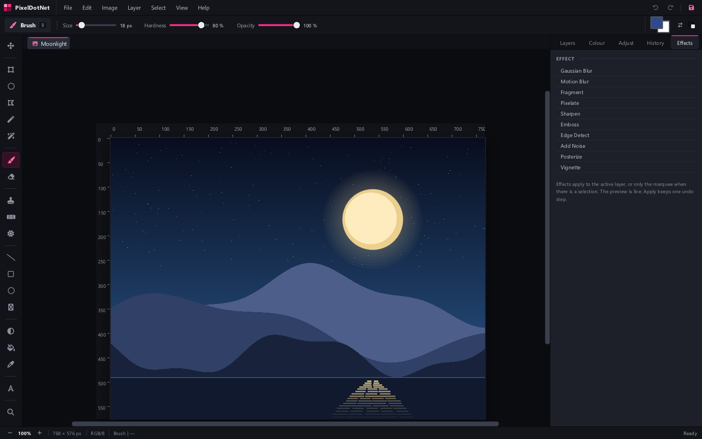
The Effects tab. Pick a filter, set the amount, then Apply or Cancel.
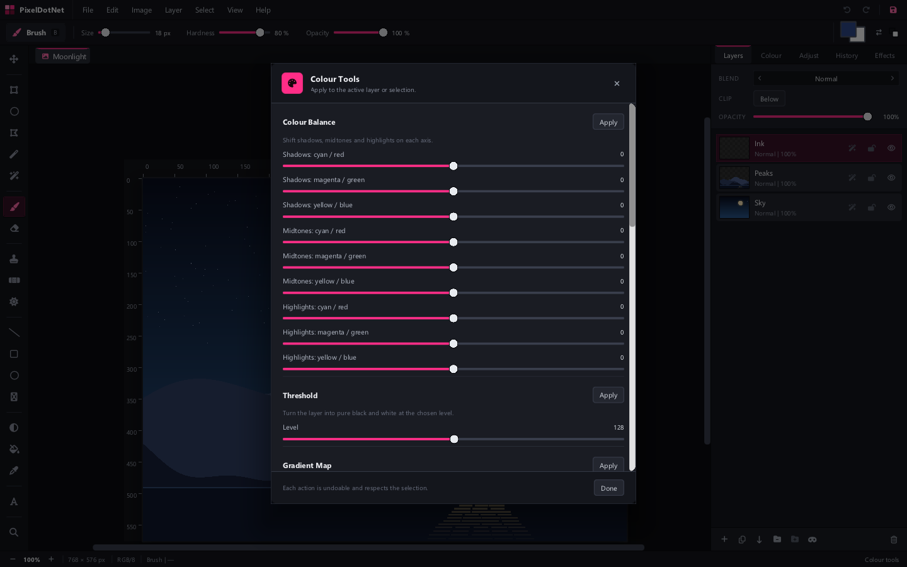
Colour Tools. Eight independent operations, each with its own Apply button.
08 / Transform and resize
Tilt, warp,
resize.
Perspective for straight edges, mesh warp for gentle reshaping, and document controls that change the artwork or just the frame.
Perspective Transform
Pull each corner independently to straighten a building, poster or screen. The preview updates live.
Mesh Warp
A three-by-three grid bends the layer or selection around nine draggable points.
Image and Canvas Size
Scale every layer, mask and guide, or add transparent space around the artwork without stretching it.
History
A 24-step undo timeline per document. Jump back and forward without losing the thread.
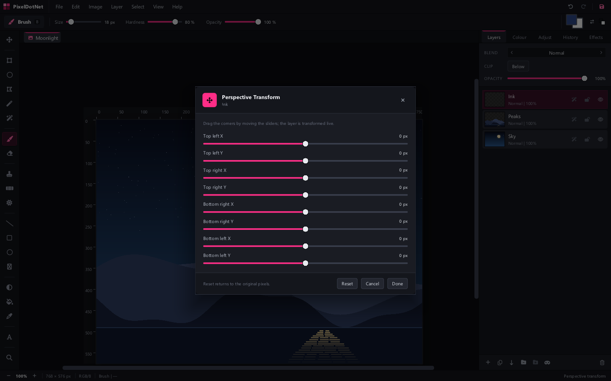
Perspective Transform. One pair of sliders for each corner, previewed live on the layer.
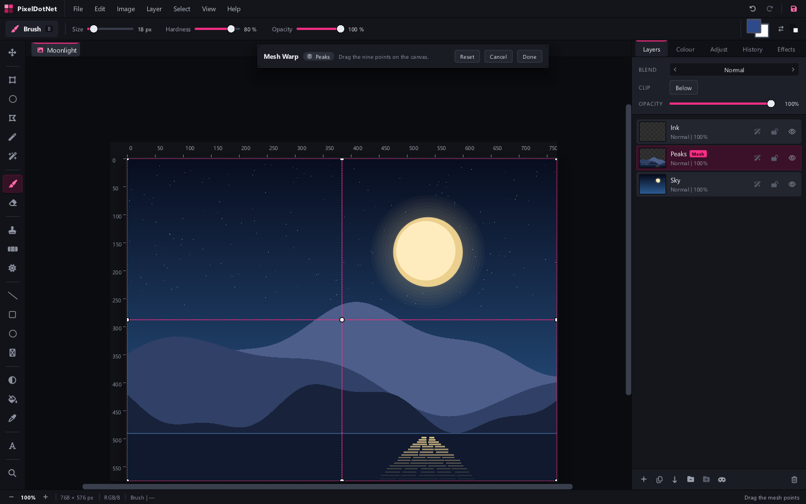
Mesh Warp. Drag the nine points to bend the picture, then press Done.
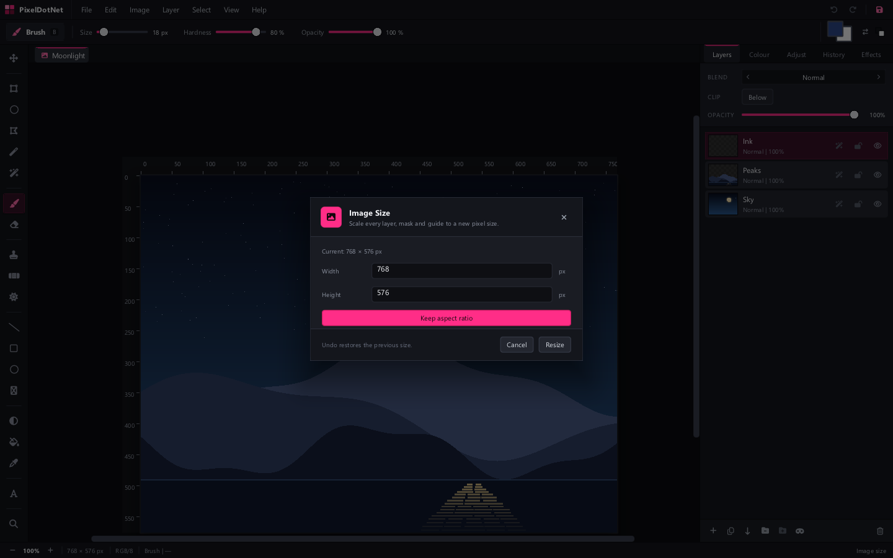
Image Size. Scale all layers, masks and guides in one undoable step.
09 / Files, batch and SVG
Save it.
Ship it.
Share a flat image, keep a layered project, process a whole folder, or move vector artwork in and out without flattening it.
Layered projects
.pxd files keep every layer, mask, group, style, smart object, shape, path and text layer.
Everyday formats
PNG and TGA keep transparency, JPEG and BMP are ready to share, and the in-app browser remembers the folder.
Batch Process
Resize, rename with a suffix and convert every supported image in a folder without opening a single tab.
SVG in and out
Import SVG shapes as editable layers, and export shape, path and text layers as real SVG; painted layers ride along as an embedded PNG.
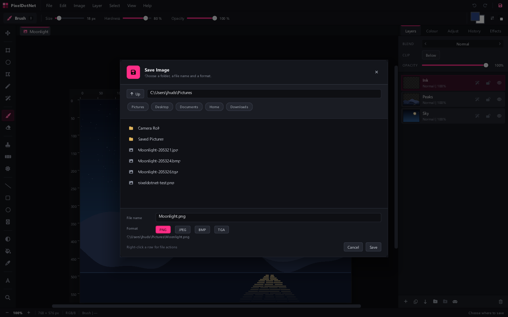
Save Image. Pick a folder, type a name, choose PNG, JPEG, BMP or TGA.
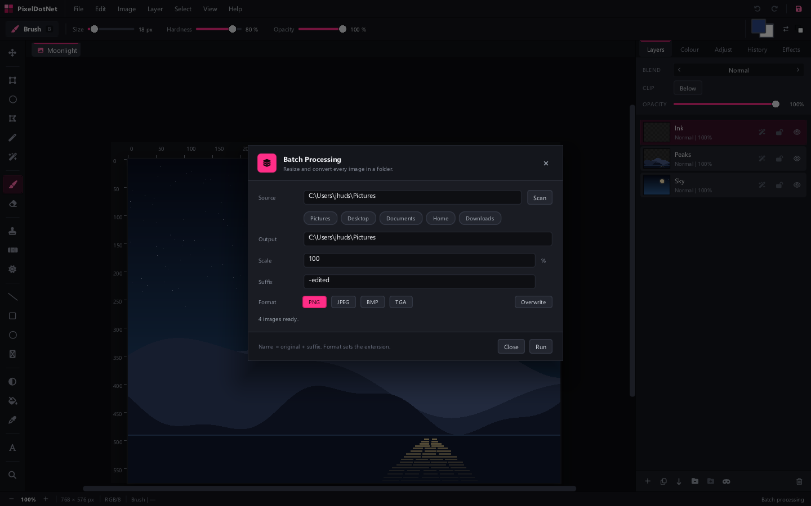
Batch Processing. Point at a source and an output folder, then Run.
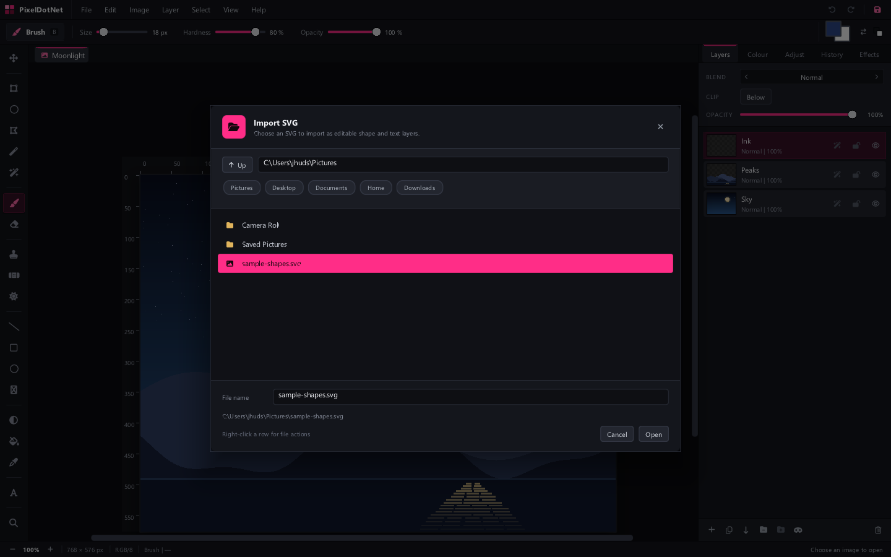
Import SVG. Each shape arrives as its own editable layer.
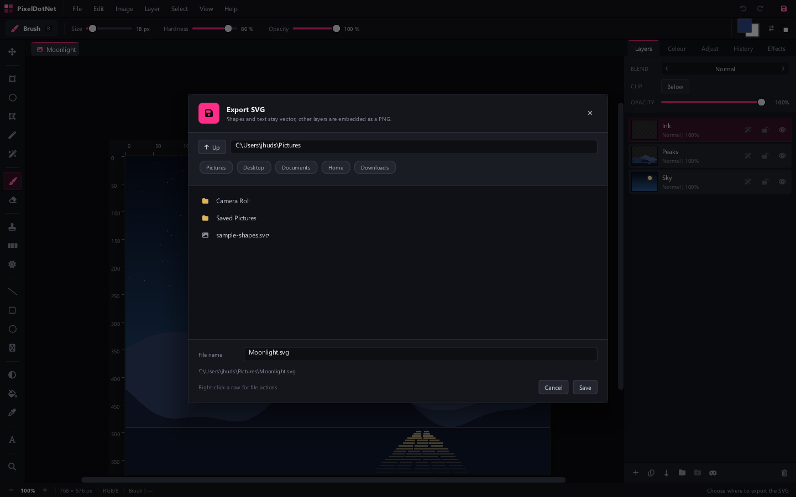
Export SVG. Shapes, paths and text stay vector; painted layers are embedded as a PNG.
10 / The fine print
Specs.
No surprises in the small type. Here is exactly what you are downloading.
- Latest release
- v1.0.12026-11-19
- Licence
- Apache 2.0 + Commons ClauseSource-available · no resale
- Platforms
- Windows · macOS · LinuxNative builds
- Download
- 35 MBPortable archive · no installer
- Formats
- PNG · JPEG · SVG · BMP · TGA · PXDOpen formats first
- Source
- PixelDotNetgithub.com/OpenCreativeSuite/PixelDotNet · Apache-2.0 + CC
Get PixelDotNet.
Download the latest release straight from GitHub. No account, no email, no trial timer. Just the app and the source.
v1.0.135 MBApache-2.0 + CCDirect from GitHub Releases. No email required.
Keep exploring